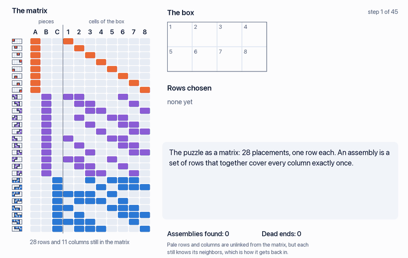
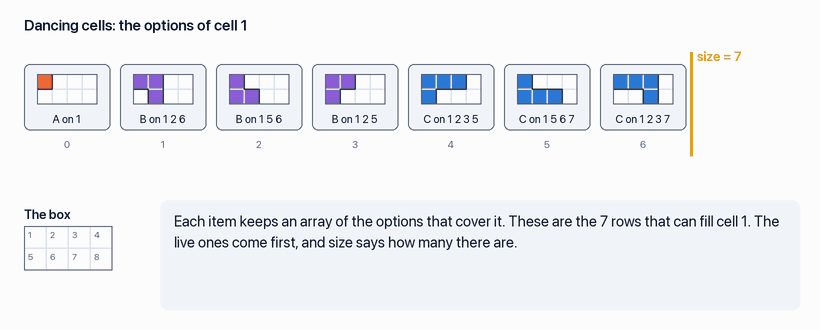

Assemblies using dancing links and dancing cells: how the Solver finds every way the pieces fill a shape
The puzzle as an exact cover problem, Donald Knuth’s dancing links, the counted cover used when several pieces share a shape, the vector search, and why dancing cells was measured and left out
Where this page fits
The Solver works on a puzzle in two stages. This page is about the first: finding the assemblies, every way the pieces can fill the shape. At this stage the pieces are simply set in their places, as if they could pass through each other. Whether an assembly can really be put together is the second stage, the disassembly, which takes each assembly apart move by move. That stage is described in Puzzle Solving: Disassembly using Breadth First and Graphs.
Summary
- Filling a shape with pieces is an exact cover problem. Each place a piece can go is a row of a table, each piece and each cell of the shape is a column, and an assembly is a set of rows that uses every column exactly once.
- The search is Donald Knuth’s Algorithm X with dancing links. It works on the column with the fewest rows. A row taken out of the table keeps its links to its old neighbors, so it can be put back with two writes and no copy of the table.
- When every part is one piece, Assembler 0 runs that search, with three additions. Cells may be allowed to stay empty. Placements that can never be used are removed first: Pelikan Burr goes from 3,026 to 15. And a vector search with one bit per column filters the rows still possible with one AND each, on several threads at once.
- When several pieces share a shape, Assembler 1 counts instead. A shape has one column that must be used between a minimum and a maximum number of times, after an idea of Wei-Hwa Huang’s. Each arrangement is then found once, instead of once for every order of the identical pieces. For 32 dominoes on a chessboard that is 12,988,816 tilings, not 32! (2.6 × 1035) times as many.
- Dancing cells, Knuth’s newer method, was tried twice and is not used. ShapeLogic once had a dancing cells solver, and it was slower than Assembler 0. BurrTools V2’s dancing cells was 1.5 to 3 times slower than Assembler 1’s vector search. Measuring it showed the time went elsewhere, into checking each assembly against its rotations, and fixing that made one solve 6.5 times faster.
- The puzzle as an exact cover problem
- One column at a time
- Dancing links
- Turned and mirrored copies
- Assembler 0: what ShapeLogic adds
- Several pieces of one shape: Assembler 1
- Dancing cells
- Which puzzle gets which search
- Where it comes from
1. The puzzle as an exact cover problem
Before the Solver can take anything apart, it has to know which arrangements of the pieces fill the shape. Each piece can sit in the shape in a number of ways: in each of its orientations, at every position where all its cells land on cells of the shape. Each of these is a placement. An assembly is a choice of placements, one for each piece, that fills every cell of the shape exactly once.
Mathematicians call this an exact cover problem, and it is easiest to see as a table, which the Solver calls the matrix. There is one row for each placement and one column for each piece and for each cell of the shape. A row has a mark in the column of its piece and in the columns of the cells it fills. An assembly is a set of rows that, between them, have exactly one mark in every column. The piece columns make sure each piece is used once. The cell columns make sure each cell is filled once, with no gaps and no overlaps.
Figure 1 does this for a puzzle small enough to see whole: a box of 4 × 2 cells and three pieces. A is a single cell, B an L of three cells and C an L of four. A can go in 8 places, B in 12 and C in 8, which gives 28 rows and 3 + 8 = 11 columns. The figures and animations below all use this puzzle.
Real puzzles give the same kind of table, only bigger. The twelve pentominoes in a 6 × 10 box need 12 piece columns, 60 cell columns and 1,864 rows. The matrix of Dracula’s Dental Disaster has over 1,600 cell columns. For a puzzle in three dimensions, an orientation is any of the turns the grid allows, so a piece is tried in all 24 orientations of a cube.
2. One column at a time
Donald Knuth called the plain way of searching such a table Algorithm X. Every column has to be used by some row, so the search can pick any column and try each of its rows in turn:
- If no columns are left, the rows chosen so far are an assembly.
- Otherwise pick a column. If it has no rows, this branch is a dead end: go back.
- For each row of that column: choose it, take out every column the row uses and every other row that needs one of those columns, search what is left, then put it all back.
Which column to pick matters a great deal. The best is the one with the fewest rows, a rule Knuth’s paper calls the S heuristic. A column with one row is a forced move, and a column with none ends the branch before any more work is done on it. ShapeLogic’s plain search takes the column with the fewest rows among the piece columns and the cell columns that must be filled, and the first of them in order when there is a tie.
In the small puzzle the corner cells have the fewest rows, 7 each, because A, B and C can each cover a corner in only a few ways. Cell 1 is the first of them, so the search tries its 7 rows in turn. Figure 2 shows the whole search. Four branches end in assemblies. Four end in dead ends: after A on 1 and B on 2 5 6, for instance, piece C has nowhere left to go.
3. Dancing links
Almost all the work of the search is taking rows and columns out of the matrix and putting them back, millions or billions of times. In 2000 Knuth published a way to do this that he called dancing links, after a trick of Hitotumatu and Noshita from 1979. Each mark of the matrix is a small record, a node, that sits in two circular lists at once: across, in its row, and down, in its column. Each column also has a header that counts its rows.
The trick is in how a node leaves a list and comes back (Figure 3). To take node x out, its left neighbor is pointed past it to its right neighbor, and the right neighbor back to the left one. That is two writes. Nothing is written to x itself, so it still points to the neighbors it had. To put it back, the same two writes are made the other way round, using x’s own links to find where it goes. As long as nodes are put back in the reverse of the order they were taken out, every list comes back exactly as it was. No copy of the matrix is made, and no memory is allocated or freed during the search. Knuth’s name comes from watching the links go out and back in.
Covering a column uses this twice over. The column’s header leaves the list of headers, and then every row that has a mark in the column leaves all the other columns it is in, with each of those columns’ counts going down by one. Choosing a row covers each of its columns in turn. Uncovering does the same steps backwards. A covered row never needs to be looked at again until it comes back.
The animation shows the whole search of the small puzzle on its matrix. The column the search is working on is shaded, the rows it has chosen are outlined, and pale rows and columns are the ones currently linked out.

ShapeLogic keeps the nodes in plain arrays, one each for left, right, up and down links and one for the column (DlxNodes in dlx_matrix.h), with the up and down links side by side so that the cover loops need one register fewer. The plain search is written as a loop over an explicit list of the rows chosen, not as a function that calls itself. It can therefore stop after any step, be saved in the puzzle file, and carry on later from the same place, which is how the Solver pauses and how its autosave works.
4. Turned and mirrored copies
The small puzzle’s four assemblies are really one arrangement (Figure 5). The other three are the first one mirrored or turned half way round. In three dimensions, turning a flat arrangement over is just another rotation, so all four are the same puzzle seen from different sides. The same happens in every puzzle whose shape has symmetries. A cube has 24, so each assembly of a puzzle that fills a cube could turn up 24 times.
The Solver avoids most of these copies before they are found. One piece, the symmetry breaker, is placed in fewer orientations than the others, so that most turned copies of an assembly have no rows to be built from. The piece chosen is the one that shares the fewest symmetries with the shape. Any copies that still get through are compared with the assemblies’ turned versions and dropped, unless the Solver’s Keep Rotated or Keep Mirror options are on. For the twelve pentominoes in a 6 × 10 box the Solver reports 2,339 assemblies, the number Knuth gives in his paper for the different ways to fill that box.
5. Assembler 0: what ShapeLogic adds
Assembler 0 is the dancing links search above, used whenever every part of the puzzle is exactly one piece, the usual case for burrs and boxes. It has three additions.
Cells that may stay empty
A puzzle’s shape can have cells marked as allowed to stay empty. Each of these gets a column too, but a column that is never picked to branch on and need not be covered. The puzzle says how many of them, its holes, may stay empty in an assembly. A branch in which more of these columns have no rows left than there are holes allowed is a dead end. Dracula’s Dental Disaster has 720 cells that must be filled and 936 that may stay empty.
Removing placements that can never be used
Before the search, the Solver trims the matrix with two tests, repeated until nothing more changes:
- If every placement of a piece fills a certain cell, no other piece can ever use that cell, so every other placement on it goes.
- Each placement is tried on its own: it is chosen, and if that leaves a column with no rows, such as a cell that nothing can fill any more or a piece with nowhere to go, the placement can never be part of an assembly and goes.
Columns that turn out to be identical, filled by exactly the same placements, are then merged into one. That saves no search steps but makes each one cheaper. On a burr the trimming can remove almost everything. Pelikan Burr’s matrix starts with 3,026 placements and 519 columns and ends with 15 placements, with 291 columns merged away.
The vector search
Dancing links is fast, but every step follows pointers around memory. Modern processors can instead test hundreds of bits at once with vector instructions. So when the matrix has at most 2,048 columns, Assembler 0 uses a different search over the same table. Each row becomes a bit mask, one bit per column. At each step the search keeps the list of rows that are still possible. When it chooses a row, it makes the next list by testing every row on the current one against the chosen row’s mask. One AND per row is enough: a row that shares no column with the chosen row gives zero and stays (Figure 6).
The processor does the AND 128 bits at a time with NEON on Apple silicon, or 256 or 512 bits at a time with AVX2 or AVX-512 on Intel and AMD. The Solver picks the instructions when it starts, and has a plain version for processors with none of them. Column choice is the same rule as before, the fewest rows still possible. Nothing is ever unlinked, so there is nothing to put back: going back means returning to the list one level up. And because the matrix itself never changes, several threads can search different branches of the same matrix at once. The search is split into tasks by its first few choices, and a task that turns out to be large splits again while it is being searched. The vector search is the default whenever the matrix fits. The plain dancing links search runs otherwise, and in the assembler’s step-by-step debugger.
6. Several pieces of one shape: Assembler 1
Exact cover as described so far has a problem with identical pieces. If a puzzle has three dominoes, each one needs a piece column of its own, and the search then tells them apart. Every way of filling the shape is found once for each way of handing out the names (Figure 7). Three dominoes in a 3 × 2 box can be laid in 3 ways, but with named pieces the search finds 18 covers. With 32 dominoes on an 8 × 8 board each tiling would be found 32! times, about 2.6 × 1035.
Assembler 1 handles every problem Assembler 0 cannot, using a cover with counts after an idea of Wei-Hwa Huang’s. Instead of “exactly once”, each column has a minimum and a maximum:
- A shape column stands for all the pieces of one shape. Each placement adds 1 to it, and the total must end between the problem’s minimum and maximum for that shape. For three dominoes both are 3. A part that may be used or not has a minimum of 0.
- A cell column must be covered exactly once, or at most once for a cell that may stay empty.
- A range column appears when some shapes have ranges, such as “0 to 9 of these”. It counts the cells that those pieces fill, which must come to what the rest of the puzzle leaves for them.
The pieces of a shape have no names, so a set of placements is one cover and is found once. The search branches on the column that leaves the fewest possibilities, judged by its number of rows and how much more it may take. Knuth’s own book treats the same extension of exact cover, as covering with multiplicities. Assembler 1 has a vector search of its own too, with bit masks of up to 32,768 cells, used when its tables fit in a memory budget (256 MB unless set otherwise).
The counts bear this out. For 32 dominoes on an 8 × 8 board the search finds 12,988,816 covers, the known number of ways to tile a chessboard with dominoes, each exactly once. Turned and mirrored copies are then dropped, which leaves 1,629,189 assemblies. Identical pieces cannot serve as a symmetry breaker, so here every cover is found in each of its positions and has to be checked. Section 7 shows that this check, not the search, was where the time went. Solid Six Piece Burrs is another Assembler 1 puzzle: it lets each of 25 shapes be used anywhere from 0 to 6 times.
7. Dancing cells
Knuth has since described a second way to take things out of a search and put them back, which he calls dancing cells. It is part of the newer, still unfinished sections of The Art of Computer Programming (section 7.2.2.3), and it replaces the linked lists with sparse sets, a structure Preston Briggs and Linda Torczon described in 1993. Each item, for example a cell, keeps its options in an array, with the ones still in play first and a count of how many there are. To take an option out of play, it is swapped with the last one in play and the count drops by one. A second table records where each option sits, so it can be found without a search. Going back means only putting the saved counts back. The options are then in a different order, but the part in play holds the same ones (Figure 8). The arrays sit together in memory, which suits processor caches better than lists of nodes scattered around.

ShapeLogic has met dancing cells twice.
- The BurrTools 2 solver. The BurrTools version that ShapeLogic was first ported from had a third solver type, BurrTools 2, which assembled with dancing cells split over threads. It was ported along with the rest. It handled only puzzles where every part is one piece, it was slower on them than Assembler 0, and a paused solve of it could not be carried on. It was removed with its code when ShapeLogic settled on its two solver types, Complete and Fast.
- BurrTools V2. The original author’s rewrite of BurrTools uses dancing cells, with a minimum and maximum for each item, as its only assembler. In November 2026 its own solver code was given the matrices that Assembler 1 builds for boxes full of identical pieces and for piece ranges, and timed against Assembler 1’s searches on the same matrices. Each search only counted its covers, and all of them found the same number.
| Box | Covers | Assembler 1, vector | Assembler 1, plain | V2 dancing cells | V2 dancing links |
|---|---|---|---|---|---|
| 20 dominoes, 2 × 4 × 5 | 535,229 | 0.094 s | 0.187 s | 0.137 s | 0.049 s |
| 12 L-trominoes, 3 × 3 × 4 | 471,296 | 0.110 s | 0.282 s | 0.249 s | 0.117 s |
| Ranges, 3 × 3 × 3 | 716,835 | 0.485 s | 1.681 s | 1.424 s | 0.877 s |
| 3 of each tetromino, 6 × 10 | 0 | 23.3 s | 55.9 s | 36.7 s | 31.1 s |
| 32 dominoes, 8 × 8 | 12,988,816 | 2.13 s | 5.05 s | 3.73 s | 1.32 s |
| Ranges, 6 × 6 | 22,553,280 | 5.27 s | 21.1 s | 15.1 s | 6.89 s |
Dancing cells was slower than Assembler 1’s vector search on every box, by 1.5 to 3 times, and slower than V2’s own dancing links on every box too. V2’s dancing links beat the vector search on the two domino boxes, where each step does very little. On these boxes, though, the search turned out to be a small part of the solve. Of the 58 seconds ShapeLogic then took for 32 dominoes on 8 × 8, the search was 2.1 seconds. Building an assembly for each of the 13 million covers took 16.6 seconds, and checking each against its turned versions took 39.
So no dancing cells assembler was built. That check was rewritten instead to work on the rows of the matrix, so that only the covers that are kept are ever built into assemblies. Times on one thread:
| Puzzle | Before | Faster sort only | Check on the rows |
|---|---|---|---|
| 20 dominoes, 2 × 4 × 5 | 1.13 s | 0.75 s | 0.19 s |
| Ranges, 3 × 3 × 3 | 1.32 s | 1.29 s | 0.57 s |
| 32 dominoes, 8 × 8 | 58.1 s | 36.7 s | 8.9 s |
| Ranges, 6 × 6 | 40.2 s | 36.0 s | 9.9 s |
| Burr-Glar | 21.4 s | 21.4 s | 15.4 s |
8. Which puzzle gets which search
The Solver chooses the assembler from the puzzle itself. There is no setting for it, and the solver type, Complete or Fast, does not change it, only the take-apart.
| The puzzle | Assembler | Search |
|---|---|---|
| Every part is exactly one piece | Assembler 0: exact cover with dancing links | The vector search when the matrix has at most 2,048 columns, otherwise the plain dancing links search. Either one splits over threads. |
| Several pieces of a shape, or ranges of pieces | Assembler 1: cover with counts | Its vector search when its tables fit the memory budget, otherwise its plain search. Either one splits over threads. |
The table below shows what the matrices of some real puzzles look like. Placements are counted once for each shape. “After reduce” is what is left once the placements that can never be used are removed, which the Solver does by default. Search nodes are the nodes the vector search entered on one thread (the plain search counts its steps differently, so the two are not comparable).
| Puzzle | Assembler | Parts / pieces | Cells | Placements | After reduce | Assemblies | Search nodes |
|---|---|---|---|---|---|---|---|
| The twelve pentominoes in a 6 × 10 box | 0 | 12 | 60 | 1,864 | 1,738 | 2,339 | 1,828,522 |
| Bermuda | 0 | 12 | 72 | 1,264 | 1,214 | 1 | 1,877 |
| Pelikan Burr | 0 | 7 | 296 + 216 may stay empty | 3,026 | 15 | 12 | 37 |
| Dracula’s Dental Disaster | 0 | 9 | 720 + 936 may stay empty | 64 | 32 | 84 | 190 |
| Solid Six Piece Burrs | 1 | 25 / 150 | 104 | 1,593 | 330 | 588 | 204,159 |
| 20 dominoes in a 2 × 4 × 5 box | 1 | 1 / 20 | 40 | 82 | 82 | 83,442 | 1,837,949 |
| A 3 × 3 × 3 box from three shapes, each in a range of counts | 1 | 3 / 24 | 27 | 315 | 315 | 14,992 | 5,609,985 |
| 32 dominoes on an 8 × 8 board | 1 | 1 / 32 | 64 | 112 | 112 | 1,629,189 | 50,102,176 |
The burrs show how much the trimming of section 5 can do. Pelikan Burr’s 15 remaining placements give 12 assemblies in 37 nodes. A box of pentominoes has no such help: its pieces fit in many places, and 1.8 million nodes are needed to find its 2,339 assemblies. The boxes of identical pieces are where Assembler 1’s counting matters, and where most of the time goes on the covers rather than the search.
9. Where it comes from
Donald Knuth, professor emeritus at Stanford University and author of The Art of Computer Programming, described Algorithm X and dancing links in his paper “Dancing Links” in 2000, using pentomino puzzles as one of his examples. The book treats them fully in Volume 4B (2022), section 7.2.2.1, together with exact cover with multiplicities. Dancing cells belongs to the sections he is still writing.
ShapeLogic’s two assemblers come from BurrTools, the puzzle solver written by Andreas Röver, from which ShapeLogic was ported and whose answers it is tested against. Assembler 0 is Knuth’s algorithm. Assembler 1 is the cover with counts after Wei-Hwa Huang. The vector searches and the dancing cells solver came from the BurrTools version that ShapeLogic was first ported from. The check of rotated copies on the matrix rows, and tasks that split while they are searched, were added in ShapeLogic in November 2026, as a result of the dancing cells measurements.
Sources
- D. E. Knuth, “Dancing Links”, in Millennial Perspectives in Computer Science, Palgrave, 2000, pp. 187–214; arXiv:cs/0011047.
- D. E. Knuth, The Art of Computer Programming, Volume 4B, Combinatorial Algorithms, Part 2, Addison-Wesley, 2022, section 7.2.2.1.
- H. Hitotumatu and K. Noshita, “A technique for implementing backtrack algorithms and its application”, Information Processing Letters 8 (1979), 174–175.
- P. Briggs and L. Torczon, “An efficient representation for sparse sets”, ACM Letters on Programming Languages and Systems 2 (1993), 59–69.
- ShapeLogic sources: core/shapelogic/solve/dlx_matrix.{h,cpp} (DlxNodes, DlxMatrix::reduce, clumpify), assembler_0.cpp (iterativeMultiSearch), simd_exact_cover.cpp, assembler_1.{h,cpp}, simd_huang_cover.cpp, row_rotation_check.cpp and solver_type.cpp (chooseAssembler); decisions 0019 (the solver types) and 0024 (the dancing cells measurements and the rotation check on rows).
- The counts in section 8 come from a small program that builds each puzzle’s matrix with the Solver’s own assembler, reduces it, and searches it on one thread. The pentomino and box puzzles are the ones the benchmark script tests/bench/bench.py generates. The others are the files of those names in ShapeLogic’s test data: Pelikan Burr by Dic Sonneveld, Bermuda, Dracula’s Dental Disaster by Ronald Kint-Bruynseels, and Solid Six Piece Burrs. The timings in section 7 were measured on 9 November 2026 and are recorded in tests/bench/README.md.
- The small puzzle of the figures was searched with a copy of Assembler 0’s plain search, its column rule and row order, written for this page.